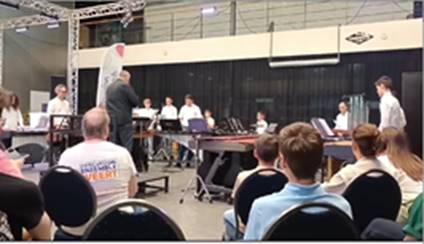
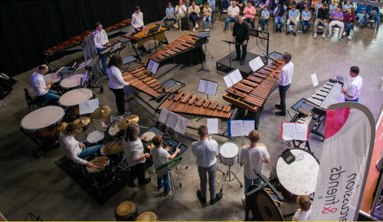

Nederland · 2021 – 2024
Fanfare St. Caecilia Broeksittard
Slagwerkleerlingen aan muziekschool Cultuurperron, Thorn, vanaf 26 oktober 2021, en het slagwerkensemble van Fanfare St. Caecilia Broeksittard vanaf 26 januari 2022.
- 2024
15 juni · Thorn
Concert in Adams Music Centre, Thorn, in samenwerking met het slagwerkensemble JMS Eschweiler: Dakota, Velvet History (uitgebreide versie) en To the Top.
22 april · Volt, Sittard
Powerized-concert — rockband met slagwerkensemble: Imagine Dragons, Believer; Powerized, Fire Away; Bastille, Pompeii; en St. Caecilia on Parade (M. Mordant).

Festival Percussion & Friends, zaterdag 15 juni 2024 
Concert bij Adams, Thorn 
Concert bij Adams, Thorn 
Powerized-concert, Volt Sittard - 2023
17 december · Broeksittard
Concert met een nieuw opgedragen stuk: St. Caecilia on Parade (M. Mordant).

- 2022
21 oktober · Forum Sittard — eerste concert
Slagwerkensemble: Six Little Indians (V. Firth); Examinandus (S. Egberts, arr. M. Mordant); Velvet History (M. Mordant).

Examinandus (S. Egberts, arr. Michel Mordant) tijdens een concert. - 2021
Slagwerkleerlingen, muziekschool Myouthic.